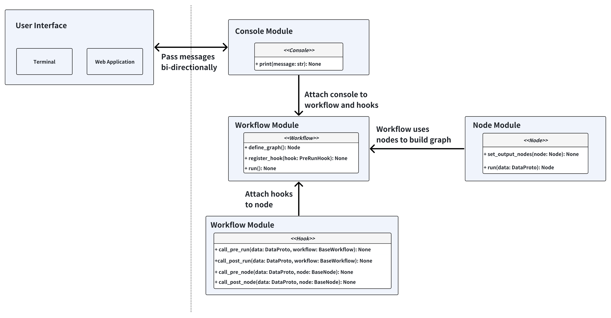

Design Philosophy#
Overview#
This document introduces the design philosophy of Autopilot, including the architecture philosophy, workflow design, and node design. Through this document, you can get a comprehensive understanding of the design philosophy of Autopilot.
Architecture#

The core idea behind this architecture is that we want to make autopilot a flexible agent utility library. With this architecture, you can easily build, modify and extend the workflow to fit your needs. We take inspiration from PyTorch and treat workflows as data flow graphs. The node is similar to a submodule in the PyTorch, and the workflow is equivalent to a model in the PyTorch.
In addition, we want to this workflow usable as both a CLI tool and a web application, as different users prefer different interaction modes. We have applied abstraction to the Console layer, which is responsible for exchanging messages between the workflow and the user interface.
Modules Walkthrough#
Workflow#
Workflow is the orchestration layer that manages the execution flow of nodes and defines the data flow between them. All workflows inherit from the BaseWorkflow abstract base class, which provides the core execution engine and hook system.
The workflow follows the following flow for execution:
Initialization: Create nodes, define graph connections, set start node
Pre-run Hooks: Execute registered hooks before workflow starts
Node Execution Loop:
Call pre-node hooks
Execute current node with context data and extra info
Handle exceptions and update context
Call post-node hooks
Determine next node based on node output
Termination: Stop when next_node is None or termination_reason is set
Post-run Hooks: Execute registered hooks after workflow finishes
More details can be found in the workflow section.
Node#
Node is the basic execution unit in the workflow, where all nodes inherit from the BaseNode abstract base class. Each node represents a specific functional step in the workflow, responsible for handling particular tasks and determining the next execution flow.
More details can be found in the node section.
Hook#
Hook is a way to inject sidecar logic into the workflow. It is a powerful feature that allows you to customize the workflow execution without modifying the core code.
More details can be found in the hook section.